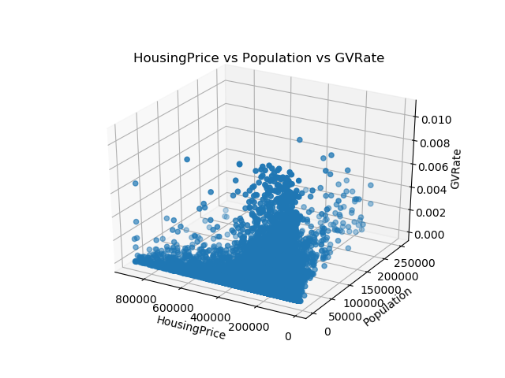
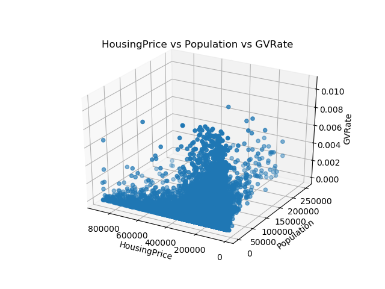
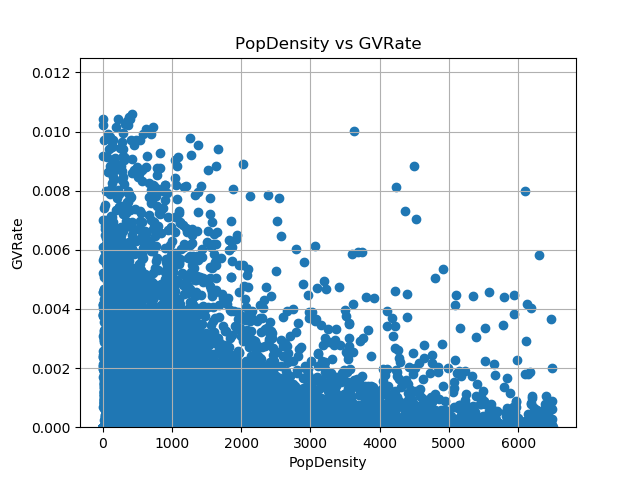
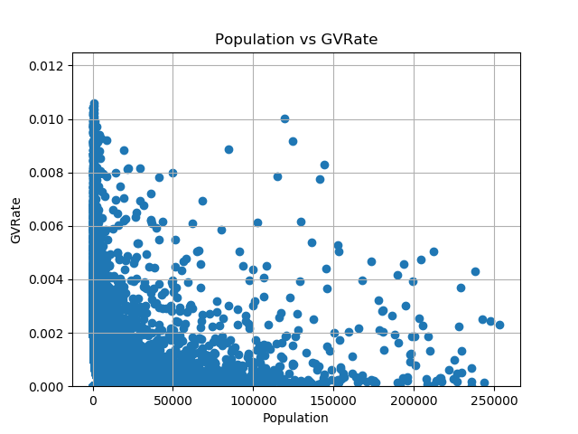
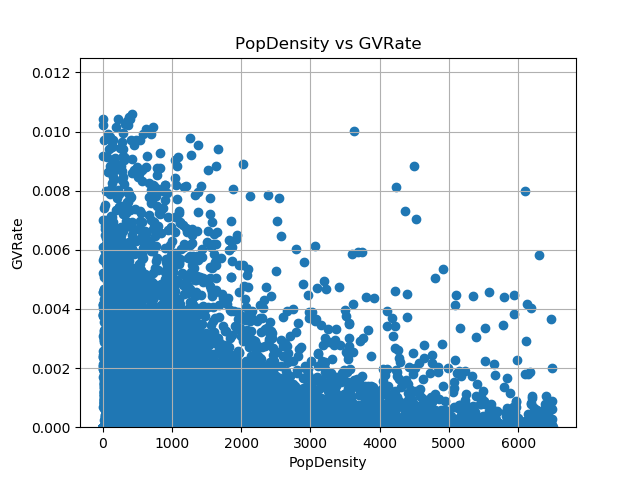
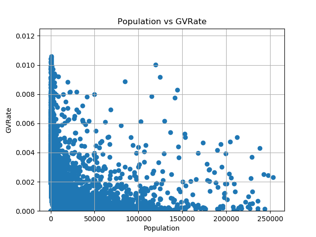

Overview
Our goal is to predict housing and population vs. rate of gun violence using multiple regression. We used utilizing multiple regressionand/or a t-test between the rate of gunviolence and high vs. low housing prices. The specific attributes of the data we are looking at are the population, housing price, rate, location (city/county), time (year). To visualize our results, we implemented multiple 2D scatterplots, bar graphs, and a map display.
Hypothesis
There is a statistical difference between Gun Violence rate (Number of Incidents/ Population) and the average housing price in an area (as an indication of wealth).
Our Five Analysis Aspects
1. Housing and Population vs Rate of Gun Violence - linear regression
2. T-test on rates of gun violence split among different high vs low housing prices
3. 3 axis scatter plots of:
Housing Price vs Population vs GVRate
4. 2 axis scatter plots of:
Housing vs GV Rate
PopDensity vs GV Rate
Population vs GV Rate
5. Display data on a US Map
GVRate
Housing Price
Injured
Killed
NumInccidents
PopDensity
Population
6. Bar graphs?
For our full results and graphs, please refer to the outputs of the github under analysis/output, add the graphs there or run the corresponding scripts to get more graphs. You can also take a look at kmeans; it essentially separates the data a little lol and adds some nice colors. :)
2DScatter - contains the 2DScatter plots
3DScatter - contains the 3DScatter plots
kmeans - not using but worth adding for questions?
maps - contains the maps
 

 


